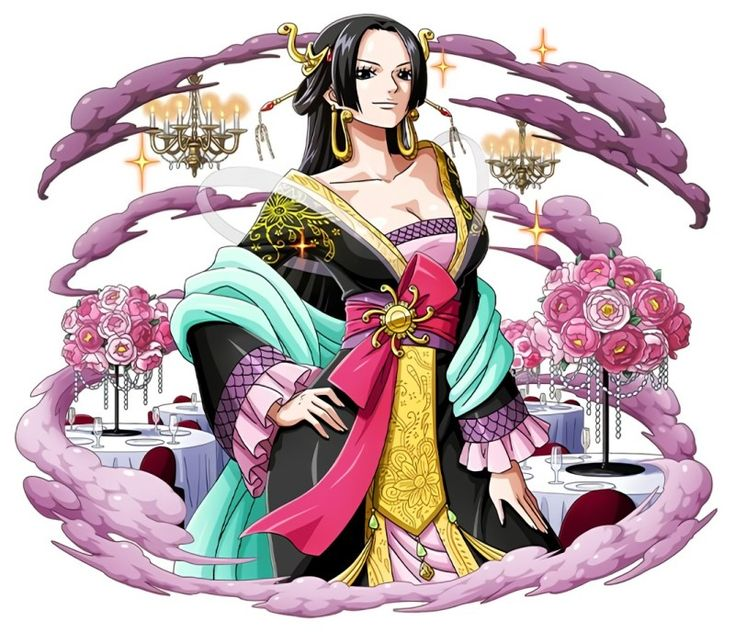

원피스의 등장인물.
전 왕의 부하 칠무해의 홍일점. 뭇사람들이 세상에서 가장 아름다운 여성이라고 칭송하는 절세가인이다.
특수한 수단을 사용하지 않으면 사실상 접근이 불가능한 캄벨트에 위치한 여성 전투민족 '구사(九蛇)'의 나라
'여인섬' 아마존 릴리의 황제이자 구사 해적단을 이끄는 선장으로 여동생인 보아 썬더소니아, 보아 마리골드와 함께 '고르곤 세 자매'
라고 불린다. 아마존 릴리의 백성들은 모두 행콕을 '뱀여왕(蛇姫)님'이라고 부르면서 그녀를 경외한다.
고작 18살의 나이에 단 한 번의 원정으로 그 목에 8,000만 베리라는 현상금이 걸렸다.[19] 그리고 그 실력과 예로부터 악명을 떨친 구사의
전력을 경계한 세계정부의 제안을 받아들여 무려 13년 동안 왕의 부하 칠무해로 군림했다.
이름의 유래는 보아뱀과 꽃 '스노우베리 핸콕'.